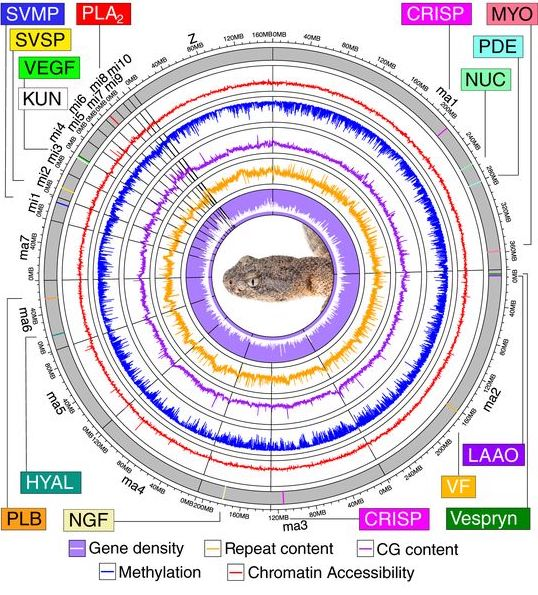
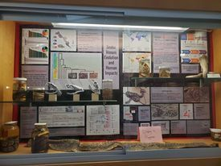

About

Aspiring Geneticist
I am an undergraduate studying genomics and bioinformatics. I am intrested in understanding the genomic structure of coevolution systems and utilizing bioinformatics to enhance that understanding. This website is intended to assist other undergraduates interested in research, STEM, genomics, bioinformatics, and publications.
Research
Venom Transcriptomics

I began my undergrad research career with this project as my Honors Thesis. My Honors Thesis gave me the opportunity to conduct fieldwork, labwork, bioinformatics, and network with peers and faculty. My research is focused on characterizing the transcripts produced in the venom gland and determining if there is sexual dimorphism in venom between males and females. Within my mentor’s research program on venom evolution, I developed the idea, wrote and defended my project proposal, and have submitted 7 grant applications to support it. My first year (2020-2021) I spent over 100 hours in the field sampling reptiles and amphibians to catch my target species. My second year (2021-2022) was spent milking and dissecting all of my specimens and learning the molecular techniques needed to generate data. My third year (2022-2023) I began understanding bioinformatic pipelines and processing my raw data collected from RNA-extraction techniques. I am now processing the data I generated to test for sexual dimorphism. I am the first to characterize the species’ venom which can be used by other researchers studying rear fanged species and potentially for identifying novel biological compounds.
Deciphering Trait Evolution

Striking biological phenotypes are among the most iconic biological images, but in many cases our understanding of how adaptive traits emerge and are shaped by selection or drift is incomplete.
I am interested in understanding how biological traits emerge and diversify across species groups to further our knowledge of how phenotypic diversity is generated.
Snake venoms are an especially fruitful area of study because of the particularly strong and readily quantifyable relationship between genotype and phenotype.
Venoms are also remarkably variable at several biological levels, which provides an ideal setting for testing how differences emerge.
Some of my work to-date has correlated known or observed differences in venom phenotypes with particular genetic mechanisms to infer possible mechanisms of divergence.
Most recently I collaborated on a project examining how different sources of genetic variation, gene content, transcript sequence diversity, and expression diversity are associated with more or less phylogenetically diverse diets.
Combining phylogenetic path modeling with a recently published venom gland transcriptome dataset, we find that higher toxin sequence diversity is associated with broader diets.
Surpringly, higher expression diversity was associated with less broad diets, but with toxin family-specific analyses we found that this pattern was driven by PLA2s.
Unlike other large toxin families, overall higher PLA2 expression, rather than more diverse PLA2 expression, was associated with broader diets.
While linking specific sources of venom variation to distinct ecological outcomes, this study also demonstrated how distinct genomic regions can respond to selection differently.
Identifying Genomic Mechanisms of Differentiation
Differences that we observe among populations and species start with changes that occur at the genomic level. A wide array of genetic mechanisms can produce novel or modified phenotypes, but how various mechanisms contribute to phenotypic diversification independently or in concert is not well-understood in most cases. Using new sequencing technologies and emerging analytical methods, we can evaluate the roles of different genetic mechanisms in phenotypic differentiation. My current work in this topic has been primarily focused on identifying the genomic changes that are associated with different venom compositions in Sistrurus and other rattlesnakes.
Population Genomics of Founding Events
Population expansions into new habitats create opportunities for lineage divergence and may be associated with early stages of speciation. Founding events can occur naturally as species ranges expand or be human-mediated, as is the case in biological invasions. Such cases offer the opportunity to examine how population sizes and genetic diversity change during population establishment, and subsequently shape evolutionary tragectories. We are currently evaluating these topics in multiple systems, including mainlaind-island populations of Brazilian jararaca lineages and an invasive population of common wall lizards in Cinncinnatii, Ohio.
Publications
In Revision
Canterbury, D.N., G.E. Coppinger, S. Morris, and J.L. Strickland. Hyla gratiosa (Barking Treefrog) Axanthism. In press in Herpetological Review.
Teaching
In addition to my focus on research, I enjoy teaching when the opportunity arises. This includes contributing to some of my collaborators courses like Advanced Evolution and Herpetology with guest lectures, lesson plans, and activities. Most recently, I have partnered with Dr. Eric Gangloff at Ohio Wesleyan University to build a teaching module on venom in herpetology. This unit covers a variety of evolutionary concepts such as identifying evidence of selection, inferring evolutionary patterns such as convergence, and understanding the genetic mechanisms that facilitate evolution. Material for this unit has been curated as a CUBES module here.
Outreach
Much like teaching, I have not had as many recent opportunities for outreach, but I really enjoy drawing on my time working at an AZA accredited zoo facility to convey scientific information to diverse audiences. While working on my PhD I was able to participate in a number of events such as Clemson University's Tiger Field Day, where we presented information on snakes to as many as 16,000 attendees. Recently, I have also worked with a student at Ohio Wesleyan Univeristy, Jaquelyn Kessar, to help put together an exhibit on snake venom for the university's natural history museum. Speaking for myself, I was super impressed with all the work Jaquelyn put in and I am really excited by how it turned out!
